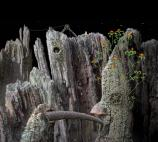
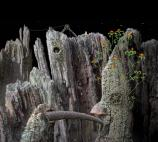
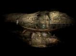
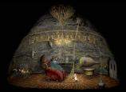
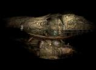
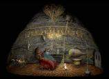

Öööö… akkor kezdem. Szintén boldog új évet kívánok! De nem azért írok, hogy csak ezt az elmúlt napokban az őrületig ismételt és elcsépelt mondatot osszam meg. Más van a háttérben.
Az Amanita Design nevű, független játékfejlesztő stúdióról, de főleg három játékukról akarok néhány dolgot elmondani. A stúdióról annyit, hogy az oldalukon minden lehetséges információ fent van róluk. El lehet olvasni, magyarra nem fordítom, erre nem pocsékolom az időt. Tanuljatok meg angolul, hasznos.
A következő cucc, az az egyik játékuk, nevezetesen a Samorost. Nos, ez egy flashben készül point & click minikalandjáték eszméletlen karakterekkel, dizájnnal és zenével. A történet egyszerű: kis pizsamás emberkénknek meg kell mentenie az űrben utazó aszterodiadarabkáját egy végzetes ütközéstől. Űrhajóra száll és utána jön a játék. Szórakoztató és addiktív. Egyetlen gond, hogy rövid. :)
 
 
Samorost 1
Később elkészült a Samorost 2, melyben pizsamaember újra útrakel, hogy kimentse a hűséges kutyáját, néhány gonosz alien markából.
  
 
Samorost 2
A második résznek még jobb a hangulata, azonban ez csak félig játszható végig ingyen. Ha a végét is látni akarjátok, akkor meg kell venni, vagy „kölcsön kell kérni egy ismerőstől”. Az a szép ezekben a játékokban, hogy akár a háttérben szereplő lepkefingnyi kapcsolónak kulcsfontosságú szerepe van. Fogalmad nincs, hogy mit mivel hogyan, de aztán rájössz. Sok mini-puzzle egy fantasztikus történetben. És csak most jön a poén.
Az Amanita Design készít egy full-scale kalandjátékot, hasonlót mint a Samorost, de ugyanakkor teljesen mást. Az állítólag első félévben megjelenő csoda neve Machinarium. Ez a játék továbbfejleszti a point & click stílust, mivel ebben nem lesz elég csak összevissza nyomkodni a képernyőn az egérrel. Ahhoz hogy interakcióba léphessünk valamilyen tárggyal, oda is kell menni hozzá, meg kell találni. Ez persze így első olvasásra gondolom senkit sem nyűgözött le, de ember legyen majd a talpán, aki mindent megtalál. Ugyanis a Machinariumban nem lehet megkülönböztetni a használható cuccokat a háttértől, naja, jön a para.
https://vimeo.com/1627388
A videót sajna csak a vimeo-n lehet HD-ben megnézni, ezért ha HD kell, akkor klikkelni is kell. Képek, artworkok meg minden más a machinarium.com-on. Várom nagyon, gyönyörű lesz, már most az. Csak ennyit akartam. Boldog új évet!


{kind=link}
{kind=link}
{kind=link}